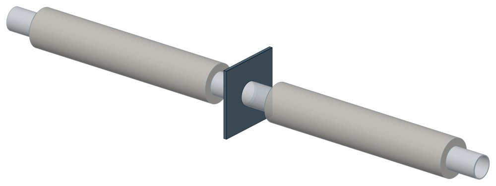

Опоры неподвижные ППУ-ОЦ (ПЭ) ППУ неподвижная
ГОСТ 30732-2020. Dн 32–1020 мм, нагрузка Pmax — до 4609,13 кН, масса 13,5–1839 кг.

- Диаметр трубы Dн
- 32–1020 мм
- Документ
- ГОСТ 30732-2020
- Исполнений
- 19
- Нагрузка Pmax
- до 470 тс
- Масса
- 13,5–1839 кг
- 3D-модели
- у всех исполнений (условные: общий вид по габаритам)
Таблица исполнений ППУ неподвижная
| Обозначение | Код ПРОМБУРГ | Стенка Sмм | Нагрузка Pmaxтс | dмм | ПЭмм | ОЦмм | Плита: Высота Нмм | Плита: Толщина Sмм | Длина Lмм | ПЭкг | ОЦкг | 3D |
|---|---|---|---|---|---|---|---|---|---|---|---|---|
| Ст32-255х16,0-1-ППУ-ПЭ(ОЦ) | ПБ-ППУН-0032-1 | 3 | 3,6 | 32 | 90; 110; 125 | 100; 125; 140 | 255 | 16 | 2500 | 13,5 | 13,7 | 3D |
| Ст38-255х16,0-1-ППУ-ПЭ(ОЦ) | ПБ-ППУН-0038-1 | 3 | 4,2 | 38 | 90; 110; 125 | 100; 125; 140 | 255 | 16 | 2500 | 14,7 | 14,2 | 3D |
| Ст45-255х16,0-1-ППУ-ПЭ(ОЦ) | ПБ-ППУН-0045-1 | 3 | 5 | 45 | 125 | 125; 140 | 255 | 16 | 2500 | 15,8 | 14,8 | 3D |
| Ст57-255х16,0-1-ППУ-ПЭ(ОЦ) | ПБ-ППУН-0057-1 | 3 | 7,5 | 57 | 125 | 140 | 255 | 16 | 2500 | 18,6 | 19,9 | 3D |
| Ст76-275х16,0-1-ППУ-ПЭ(ОЦ) | ПБ-ППУН-0076-1 | 3 | 9,5 | 76 | 140 | 160 | 275 | 16 | 2500 | 25,5 | 25,6 | 3D |
| Ст89-295х16,0-1-ППУ-ПЭ(ОЦ) | ПБ-ППУН-0089-1 | 4 | 12,5 | 89 | 160 | 180 | 295 | 16 | 2500 | 36,5 | 33,7 | 3D |
| Ст108-315х16,0-1-ППУ-ПЭ(ОЦ) | ПБ-ППУН-0108-1 | 4 | 19 | 108 | 180 | 200 | 315 | 16 | 2500 | 45 | 44,6 | 3D |
| Ст133-340х16,0-1-ППУ-ПЭ(ОЦ) | ПБ-ППУН-0133-1 | 4 | 23,5 | 133 | 225 | 225 | 340 | 16 | 2500 | 56 | 52,6 | 3D |
| Ст 159-400х20,0-1-ППУ-ПЭ(ОЦ) | ПБ-ППУН-0159-1 | 4,5 | 36 | 159 | 250 | 250 | 400 | 20 | 2500 | 81 | 77,4 | 3D |
| Ст219-460х24,0-1-ППУ-ПЭ(ОЦ) | ПБ-ППУН-0219-1 | 6 | 50 | 219 | 315 | 315 | 460 | 24 | 2500 | 134 | 116,3 | 3D |
| Ст273-550х30,0-1-ППУ-ПЭ(ОЦ) | ПБ-ППУН-0273-1 | 7 | 75 | 273 | 400 | 400 | 550 | 30 | 3000 | 223 | 150,9 | 3D |
| Ст 325-650х40,0-1-ППУ-ПЭ(ОЦ) | ПБ-ППУН-0325-1 | 7 | 90 | 325 | 450 | 450 | 650 | 40 | 3000 | 301 | 211,6 | 3D |
| Ст426-750х40,0-1-ППУ-ПЭ(ОЦ) | ПБ-ППУН-0426-1 | 7 | 120 | 426 | 560 | 560 | 750 | 40 | 3000 | 393 | 326,1 | 3D |
| Ст 530-900х40,0-1-ППУ-ПЭ(ОЦ) | ПБ-ППУН-0530-1 | 7 | 150 | 530 | 710 | 675; 710 | 900 | 40 | 3000 | 582 | 485,5 | 3D |
| Ст630-1000х50,0-1-ППУ-ПЭ(ОЦ) | ПБ-ППУН-0630-1 | 8 | 205 | 630 | 800 | 775; 800 | 1000 | 50 | 3000 | 723 | 605 | 3D |
| Ст720-1100х50,0-1-ППУ-ПЭ(ОЦ) | ПБ-ППУН-0720-1 | 8 | 235 | 720 | 900 | 875; 900 | 1100 | 50 | 3500 | 935 | 755,7 | 3D |
| Ст820-1300х50,0-1-ППУ-ПЭ(ОЦ) | ПБ-ППУН-0820-1 | 9 | 310 | 820 | 1000 | 975; 1000 | 1300 | 50 | 3500 | 1257 | 1087 | 3D |
| Ст920-1300х60,0-1-ППУ-ПЭ(ОЦ) | ПБ-ППУН-0920-1 | 10 | 430 | 920 | 1100 | 1075; 1100 | 1300 | 60 | 3500 | 1522 | 1306,5 | 3D |
| Ст 1020-1400х60,0-1-ППУ-ПЭ(ОЦ) | ПБ-ППУН-1020-1 | 11 | 470 | 1020 | 1200 | 1175; 1200 | 1400 | 60 | 3500 | 1839 | 1664,6 | 3D |
Чтобы заказать, сообщите обозначение и код ПРОМБУРГ: +7 (499) 325-51-35, promburg@yandex.ru.
Нормативные документы
- ГОСТ 30732-2020 Трубы и фасонные изделия стальные с тепловой изоляцией из пенополиуретана с защитной оболочкой. Технические условия — документ, по которому изготавливается изделие
Связанные позиции
- Парная подвижная опора: ППУ скользящая — Опоры скользящие ППУ-ПЭ(ОЦ) (общий диапазон Dн 32–1020)
Собрать узел с этим изделием
- Конструктор узла: собрать участок с компенсатором под свои данные труба, длина, среда, условия — состав узла и спецификация бесплатно
На трубу Dн 32–1020 мм в каталоге
Позиции каталога с исполнениями на те же наружные диаметры трубы.
Детали трубопровода
- Фланец стальной воротниковый общих Dн: 19
- Фланец стальной плоский приварной общих Dн: 19
- Отвод стальной крутоизогнутый 90° общих Dн: 18
- Заглушка стальная эллиптическая общих Dн: 15
- Отвод стальной крутоизогнутый 90°, 09Г2С общих Dн: 14
- Переход стальной концентрический общих Dн: 11
- Днище стальное эллиптическое общих Dн: 7
- Отвод нержавеющий 90° общих Dн: 1
Компенсаторы
- Компенсатор сильфонный 2СКУ.ППМ (ИЯНШ) 2СКУППМИ общих Dн: 16
- Компенсатор сильфонный КСО общих Dн: 16
- Компенсатор сильфонный КСОФ общих Dн: 16
- Компенсатор резиновый фланцевый NBR РКН общих Dн: 16
- Компенсатор резиновый фланцевый SBR РКС общих Dн: 16
- Компенсатор резиновый фланцевый PTFE РКТ общих Dн: 16
- Компенсатор резиновый фланцевый EPDM РКЭ общих Dн: 16
- Компенсатор сильфонный стартовый СК общих Dн: 16
- Компенсатор сильфонный СКУ.ППМ (ИЯНШ) СКУППМИ общих Dн: 16
- Компенсатор сильфонный 2ОПКР общих Dн: 15
- Компенсатор сильфонный 2ОПКР (ИЯНШ) 2ОПКРИ общих Dн: 15
- Компенсатор сильфонный 2СКУ.М 2СКУМ общих Dн: 15
- Компенсатор сильфонный 2СКУ.М (ИЯНШ) 2СКУМИ общих Dн: 15
- Компенсатор сильфонный 2СКУ.ППМ 2СКУППМ общих Dн: 15
И ещё 21 тип — в оглавлении каталога.
Другие опоры и подвески
- Опора неподвижная двухупорная ТС-660 общих Dн: 19
- Опоры скользящие ППУ-ПЭ(ОЦ) ППУ скользящая общих Dн: 19
- Опорные плиты диэлектрические ТС-632 общих Dн: 17
- Опоры хомутовые скользящие ФСО1 для труб в ППУ общих Dн: 16
- Опоры хомутовые скользящие ФСО2 для ППУ общих Dн: 16
- Опоры приварные неподвижные скользящие ОПН общих Dн: 16
- Опоры сварные скользящие неподвижные и направляющие СТО 79814898-130 общих Dн: 16
- Опоры хомутовые и скользящие неподвижные и направляющие СТО 79814898-131 общих Dн: 16
- Опора приварная скользящая и неподвижная ОСТ 34-10-616-93 общих Dн: 16
- Опоры хомутовые скользящие ОСТ 34-10-617-93 общих Dн: 16
И ещё 101 тип — в оглавлении каталога.
Другие типы раздела
Опоры труб в ППУ-изоляции (СПО, ФСО, НТС 65-06, ГОСТ 30732)
- Направляющие опоры НПО
- Подвижные опоры ОПМ
- Подвижные опоры ПО
- Опоры скользящие ППУ-ПЭ(ОЦ) ППУ скользящая
- Опоры хомутовые скользящие СПО для труб ППУ
- Опоры хомутовые скользящие СПОк для труб в ППУ
- Опоры хомутовые скользящие подкладные СПОн для ППУ труб
- Опоры хомутовые скользящие ФСО1 для труб в ППУ
- Опоры хомутовые скользящие ФСО2 для ППУ
Частые вопросы
Чем неподвижная опора отличается от подвижной?
Неподвижная закрепляет трубу в одной точке и принимает усилия от температурного расширения, давления и трения. Подвижная держит вес трубы и даёт ей перемещаться при нагреве. Неподвижные делят трассу на участки компенсации, подвижные стоят между ними. Место и тип каждой опоры задаёт проект.
Какую неподвижную опору выбрать: хомутовую, упорную, щитовую?
Выбор идёт по расчётной осевой силе и по тому, на что опора опирается. Малый диаметр и небольшая сила — хомутовая ТС-659. Нужна высота под изоляцию — хомутовая с корпусом ТС-670 или бугельная ТС-671. Труба проходит сквозь стенку — щитовая ТС-666, при большой силе усиленная ТС-667. Упор в балку или траверсу — двух- и четырёхупорные ТС-660, ТС-661, при больших нагрузках усиленные ТС-663, ТС-664.
По какому диаметру подбирать — Dн или Ду?
По наружному диаметру трубы Dн: именно он стоит в таблицах серии. Ду — условный проход, округлённая величина: Ду 100 соответствует Dн 108. В заявке указывайте Dн и толщину стенки трубы.
Какую нагрузку выдерживает опора?
Допускаемая нагрузка задана в таблице для каждого исполнения — она в первой группе колонок каждой карточки. Хомутовая ТС-659 — осевая Q от 5 до 25 кН, щитовая ТС-666 — от 50 до 3300 кН, хомутовая с корпусом ТС-670 — Q до 380 кН и боковая T до 200 кН.
Кто считает нагрузку на неподвижную опору?
Нагрузку определяет проектировщик расчётом трубопровода на прочность и компенсацию: она зависит от схемы трассы, а не только от диаметра. По заданным Dн, стенке и нагрузкам Q, P, T подбирается исполнение из таблицы.
Неподвижную опору приваривают к строительной конструкции?
Упоры и щиты приваривают к трубе, а к несущей конструкции они прилегают свободно, без приварки — так разгружаются от крутящих моментов и опора, и конструкция. У хомутовой ТС-659 упоры приваривают к трубе, а хомут — к балке.